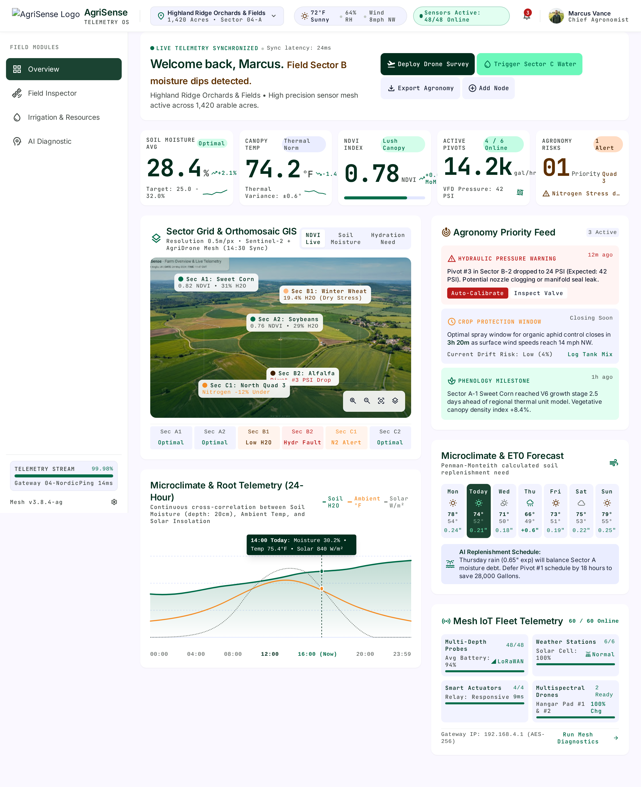
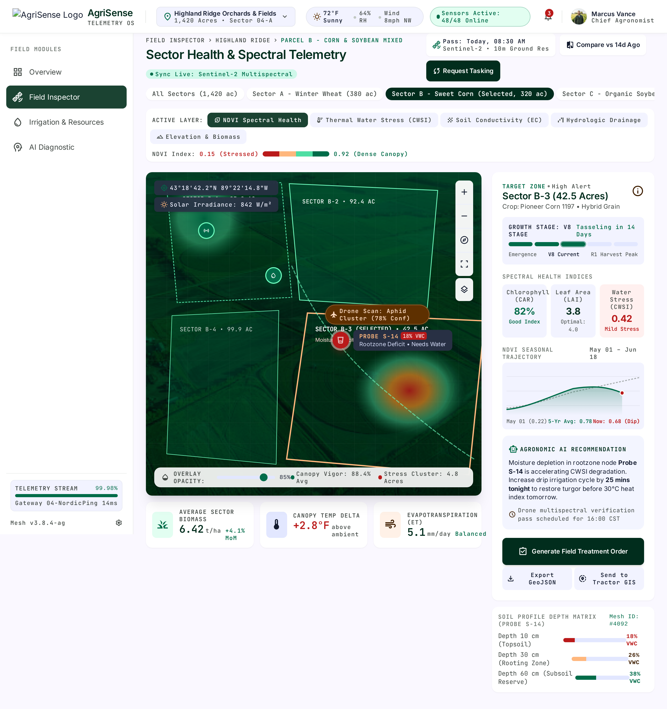
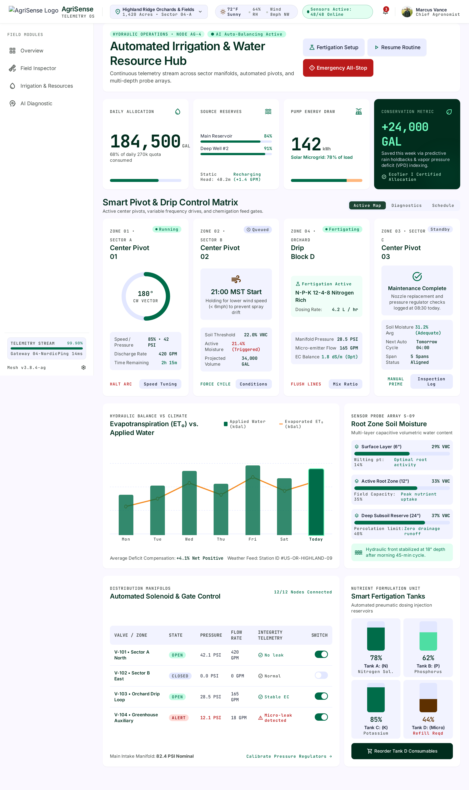
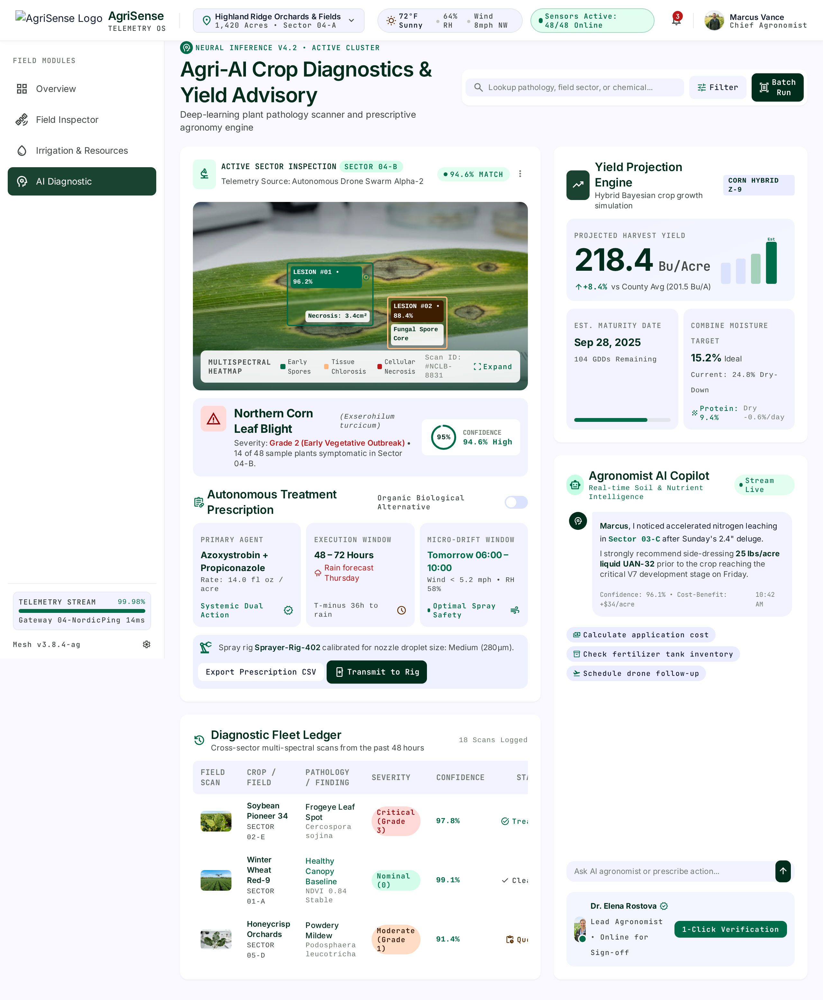
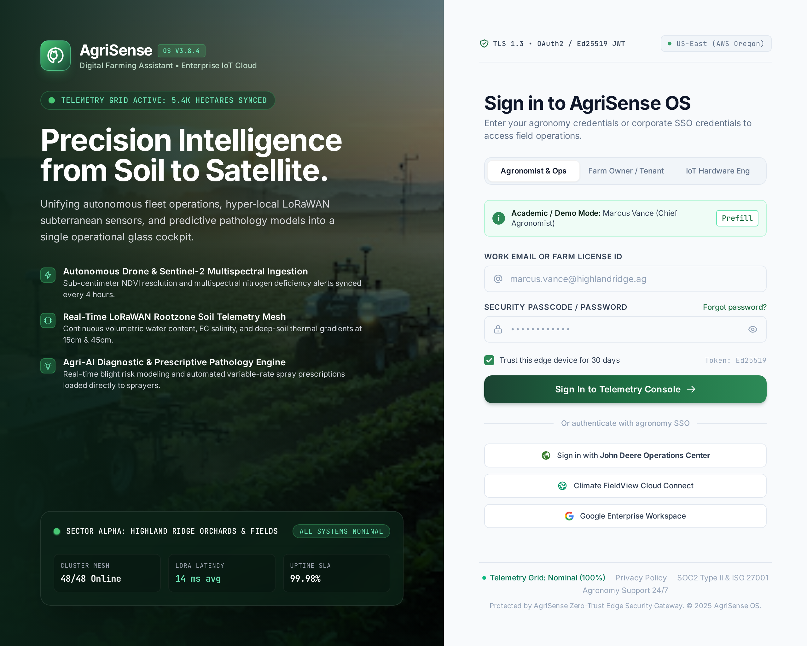

Project Screens & Interactive Modules
Explore all generated application views, telemetry dashboards, and visual assets.
6 Screens Ready

Screen 3 2560 × 3142Farm Overview & Live Telemetry
Highland Ridge 1,420-acre master telemetry dashboard with weather, soil moisture, and active alerts.

Screen 1 2560 × 2718Field & Crop Health Inspector
Multispectral Sentinel-2 NDVI canopy index, CWSI water stress heatmap, and vector GIS parcels.

Screen 2 2560 × 4308Irrigation & Resource Management
Center-pivot telemetry, aquifer water pressure, variable rate chemical injection, and scheduling.

Screen 4 2560 × 3110Agri-AI Diagnostic & Advisory
Autonomous drone pest diagnosis (aphid clusters), fungal risk indexing, and agronomic AI advice.

Screen 6 2560 × 2048Enterprise Login & Authentication
Role-based login for Agronomists, Farm Owners, and Hardware Technicians with demo credentials.
Screen 5
1376 × 768
Machinery at Dawn (Hero Asset)
Cinematic photorealistic visualization of autonomous farming machinery and telemetry pylons.